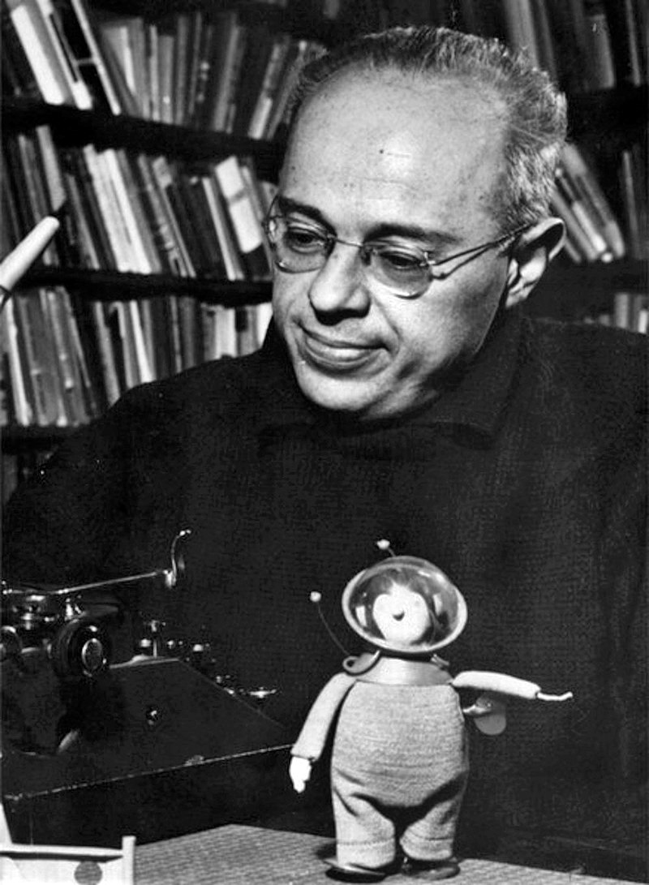

Stanislav Lem
Science explains the world, but only art can reconcile us to it.

Stanislav Lem and toy cosmonaut, 1966.
Source: CC BY-SA 3.0, Link
Timeline of Stanislav Lem's life:
- 1921 - Stanislaw Lem was born in Lwow, Poland (presently Lviv, Ukraine) to a family of a wealthy laryngologist
- 1932 - starts education at the II K. Szajnocha State Grammar School in Lwow
- 1940-41 - studies medicine at the Lwow University
- 1942 - after the occupation of Lwow by German forces works as a mechanic helper and welder for a German firm recovering raw materials.
- 1945 - following the repatriation laws along with his family leaves for Krakow
enrolls at the Jagiellonian University to study medicine
- 1946 - makes his debut with a novel Człowiek z Marsa (A Man from Mars) published as several episodes in "Nowy Świat Przygód"
- 1946-48 - cooperates with "Tygodnik Powszechny" and published poems and short stories
- 1951 - publishes his first book Astronauci (The Astronauts)
- 1953 - marries M.D. Barbara Lesniak, a radiologist
- 1955 - Czas nieutracony (further volumes of Hospital of the Transfiguration
- 1957 - Dialogi (Dialogs); Dzienniki gwiazdowe (The Star Diaries)
- 1959 - Eden; Śledztwo (The Investigation)
- 1961 - Pamiętnik znaleziony w wannie (Memoirs Found in a Bathtub); Powrót z gwiazd (Return from the Stars); Solaris
- 1964 - Niezwyciężony (The Invincible); Summa Technologiae
- 1965 - Cyberiada (The Cyberiad)
- 1966 - Wysoki Zamek (Highcastle)
- 1968 - birth of his son
- 1968 - Opowieści o pilocie Pirxie (Tales of Pirx the Pilot); Głos Pana (His Master's Voice)
- 1970 - receives a prize from the minister of foreign affairs for popularization of Polish culture abroad
- 1971 - Doskonała próżnia (A Perfect Vacuum)
- 1972 - becomes member of the committee of Polska 2000
- 1973 - Wielkość urojona (Imaginary Magnitude)
- 1973 - A literary prize of the ministry of culture; honorary member of the Science Ficiton Writers of America
- 1976 - Katar (The Chain of Chance)
- 1976 - State Prize of the first degree for literature; expelled from SFWA
- 1982 - Wizja lokalna
- 1983-88 - temporary residence in Vienna
- 1986 - awarded Austrian state prize for European Culture for 1985
- 1987 - Fiasko (Fiasco); Pokoj na Ziemi (Peace on Earth)
- 1991 - Austrian Kafka-prize for Literature
- 1994 - becomes a member of PAU (Polska Akademia Umiejętności)
- 1996 - receives the Medal of the White Eagle
- 2000 - Okamgnienie
- 2006 - Stanislaw Lem passed away on March 27th
- 2006 - Rasa drapieżców
Source: Link
Lem at Amazon
If you have time, you should read more about this incredible human being on his Wikipedia entry.